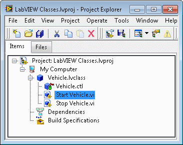
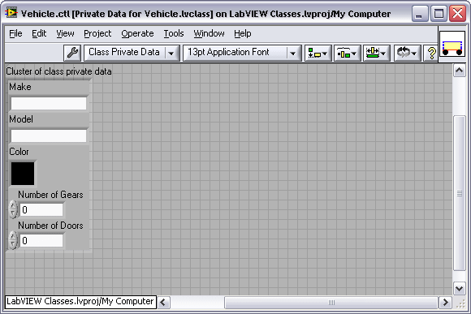
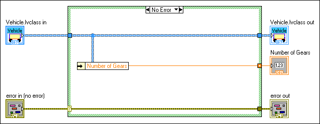
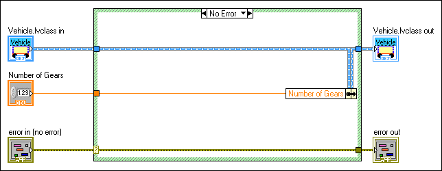
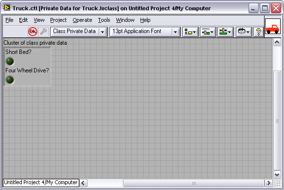
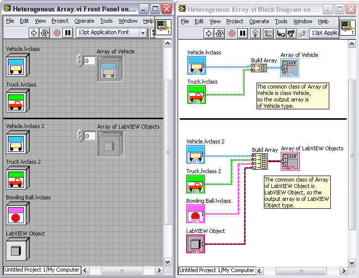
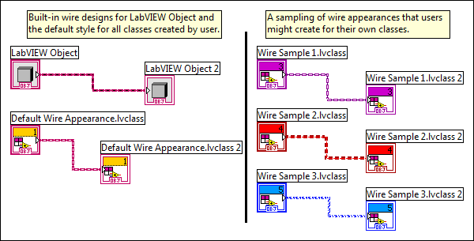
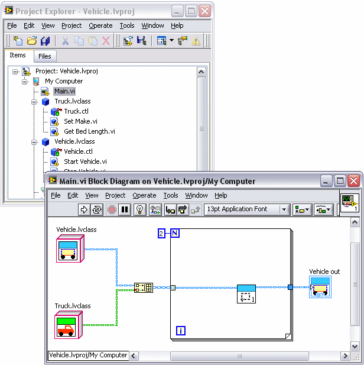

You create user-defined data types in LabVIEW by creating LabVIEW classes. LabVIEW classes define data associated with an object, as well as the methods that define the actions you can perform on the data. The benefits of encapsulation and inheritance allow you to create modular code that is easy to change without affecting code throughout the application.
In LabVIEW, the data of a class is private, which means only VIs that are members of the class can access the data. You define the data of the class in the private data control. When you create and save a LabVIEW class, LabVIEW creates a class library file (.lvclass) that defines a new data type. The class library file records the private data control and information about any member VIs you create, such as a list of the VIs and various properties of the VIs. The class library is similar to the project library (.lvlib). However, the class library defines a new data type.
The private data control is a unique class library file that defines a cluster of data for the new data type and is the data on the class wire. LabVIEW does not save the private data control on disk. Instead, LabVIEW saves it inside the class library file. Saving the private data control inside the class library file allows LabVIEW to ensure that you never use the wrong private data with the class definition.
|
Tip�� You can create a directory on disk named the same as the LabVIEW class to save the class library file, class member VIs, and class custom default probes. You can include the files that the class library owns in the directory. If you include files for more than one class library in the same directory, conflicts might occur if you try to include VIs of the same name in different class libraries. Naming conflicts can occur in the development process when you override dynamic member VIs. |
Each LabVIEW class consists of a cluster of data and methods to read and write to that cluster. The data of a LabVIEW class is always private or hidden from VIs that are not members of the class. To access the private data, you create methods, in the form of member VIs of the class, to perform functions on the private data of the class. Encapsulation is the consolidation of data and methods into a class where the data is accessible only through class member VIs. Encapsulation allows you to create modular blocks of code that you can easily update or change without affecting other sections of code within the application.
While data of the class is always private, you can expose member VIs to the user in varying degrees. You can set the access scope of a method to the following options:
 |
Note��If you specify access options for a folder, the access setting applies to all items in the folder and overrides access options for individual items in the folder. |
|
Note��Dynamic dispatch VIs break if you set them to community scope. To grant a friend access to a dynamic dispatch VI in protected scope, create a static-dispatch wrapper VI for the friend to call and set that wrapper VI to community scope. |
Designate a VI as a friend of a library to give the VI the ability to call any member of the library that is in community scope. You also can designate another library as a friend of a library.
Friendship is not transitive. For example, if a first library designates a second library as a friend, and the second library names a third library as a friend, the third library is not considered a friend of the first library. The third library cannot access VIs of the first library unless the first library designates the third library as a friend. If a library with community scope access designates a class as a friend, the member VIs of that class can access the VIs of the library, but this friendship does not extend to descendants of the class.
You can create a VI outside of the LabVIEW class and use public member VIs as subVIs on the block diagram. Public member VIs allow you to manipulate the private data of the class. You can use private and protected member VIs on block diagrams of member VIs to manipulate the private data of the class that is not exposed to LabVIEW class users. A VI outside the class might be designated a friend of the class, which gives the friend VI the right to call community members of the class. Limiting the entry points of a class can make it easier to debug code because you decrease the opportunity for introducing errors to the data.
Refer to the following projects for examples of encapsulation and access scope in LabVIEW classes.
 Open example�
Open example�
 Find related examples
Open example�
Find related examples
Find related examples
Open example�
Find related examplesLabVIEW creates a private data control of the class automatically when you create a LabVIEW class. In the following Project Explorer window, notice that the LabVIEW class icon is a colored cube. The cube represents a LabVIEW class. The icon of the private data control is a colored cube with a green cylinder. The cylinder represents data storage. Also, the icon of the private data control displays a red key glyph indicating the control is private.

You use the Control Editor window to customize the private data control of a class. LabVIEW displays the Control Editor window when you double-click the private data control of the class in the Project Explorer window. You can place controls and indicators in the Cluster of class private data to define the private data type of a LabVIEW class. The default values you set for the controls in the Cluster of class private data are the default values for the class.
|
Note��A private data control cannot contain an XControl. |
In the following example, the data type of the Vehicle class contains three numerics, Number of Gears, Number of Doors and Color, and two strings, Make and Model.

|
Note��You can leave the Cluster of class private data empty if the class does not need any private data. |
You can create icons that visually represent objects of the class on the block diagram or front panel. Click the Edit button on the General Settings page of the Class Properties dialog box to launch the Icon Editor dialog box. Create a class icon, which LabVIEW applies to all objects in the class. Then modify the individual icon for each object in the class.
Create member VIs to perform operations on the private data of the class. Member VIs are the methods of the LabVIEW class. Member VIs are members of the LabVIEW class in which you create them and appear in the Project Explorer window under the private data control of the class.
LabVIEW defines data of the class as a cluster. Any member VI can read or write to the cluster of class data. LabVIEW provides a shortcut to create a VI to access individual elements of the cluster. These accessor VIs are members of the LabVIEW class and can read from or write to class data. If you create an accessor VI to read class data, LabVIEW unbundles the class data for you, as seen in the following image.

If you create an accessor VI to write to class data, LabVIEW bundles the new value into the class data for you, as seen in the following image.

You also can use the Unbundle and Unbundle By Name functions to unbundle private data of the class on the block diagram of a member VI. Use the Bundle and Bundle By Name functions to re-bundle the cluster of private data after you access and manipulate it. Because the data of a class is private, the Bundle and Unbundle nodes break if you try to use them with class data on the block diagram of a non-member VI.
|
Note��Consider using the Bundle By Name and Unbundle By Name functions instead of Bundle or Unbundle whenever possible to prevent VIs from breaking if you insert a new element into the cluster of private data. |
If you are writing a member VI that will unbundle a value, modify it, and then bundle it back into the object, you may gain better performance by using the In Place Element structure with a pair of Unbundle and Bundle nodes on its borders. Using the structure guarantees that LabVIEW applies certain memory optimizations. These same memory optimizations may be applied when you use the regular unbundle and bundle nodes, but under certain conditions with complex VIs, the LabVIEW compiler may not recognize that the optimizations are safe to apply and will avoid applying them, resulting in lower performance. The structure node guarantees the safety of those optimizations, and thus guarantees that your VI will be optimized.
You can create a member VI in several ways. Right-click the class and select among the following shortcut menu items:
|
Note��You must save a new LabVIEW class before using this option. LabVIEW dims the VI for Data Member Access option if you have not saved the new class. |
|
Note��LabVIEW dims the New�VI for Override option if there is not a valid member VI to override. Refer to the Inheritance section for more information about dynamic VIs and overriding. |
Right-click a class constant, control, or indicator on the front panel or block diagram and select Show Class Library from the shortcut menu to highlight the class in the Project Explorer window. If the class you are working with is not in a LabVIEW project, LabVIEW opens a class window to display the class.
Inheritance allows you to use an existing class as the starting point for a new class. If you create a new LabVIEW class and set it to inherit data and member VIs from another class, the new class can use the public and protected member VIs of the class from which it inherits. It also can add its own data and member VIs to increase its functionality. For example, the private data of the Vehicle class contains Number of Gears, Number of Doors, Color, Make, and Model. If you create a new class and name it Truck, you can set Truck to inherit the data from Vehicle as well as add the Boolean data Short Bed? and Four Wheel Drive?. However, as shown in the following image, when you bundle or unbundle a LabVIEW class, the nodes show terminals only for the private data of the current class, not for any of the data the class inherits from the ancestor classes.

Ancestor data is private and you modify it by using functions the ancestor class provides through member VIs. Member VIs of descendant classes may call any of the public member VIs, just like any VI in LabVIEW. But the descendant class member VIs also can call the protected member VIs of an ancestor class. When you designate an ancestor member VI as protected, member VIs of any child class may call the method but no VI outside of the inheritance hierarchy may do so. If you want to access Number of Gears of class Vehicle in class Truck, you can create a public or protected member VI in class Vehicle called Get Gears.vi. You can unbundle class Vehicle on the block diagram of Get Gears.vi, exposing Number of Gears. You then can assign Number of Gears to an output terminal on the connector pane, which allows you to access specific private data of class Vehicle in a descendant class, such as class Truck.
You also can access Number of Gears by creating a member VI for accessing data members in the class Vehicle. When you create the member VI, in the Create Accessor dialog box, place a checkmark in the Make available through Property Nodes checkbox. You then can wire the class Truck to a Property Node, right-click the property terminal, and select Select Property�Number of Gears.
|
Note��LabVIEW classes cannot call the private member VIs of another LabVIEW class even from a parent class. You can use private member VIs only on block diagrams of other member VIs within the same class. |
|
Note�� (FPGA Module) You can use inheritance with certain restrictions when creating FPGA VIs. |
The phrase LabVIEW Object is the name of a specific class. LabVIEW Object is the ultimate ancestor of the inheritance tree in object-oriented programming in LabVIEW. By default, all LabVIEW classes inherit from LabVIEW Object. You can use LabVIEW Object to create VIs that can conduct generic operations on multiple LabVIEW classes. For example, if you create an array of LabVIEW classes, the data of the array is heterogeneous because it can contain elements of the class type of the array or any descendant class. If an array is of type LabVIEW Object, it can contain Vehicle, Truck, and Bowling Ball. Class Bowling Ball does not inherit from class Vehicle or class Truck, so LabVIEW creates an array of the most common ancestor base class, in this case LabVIEW Object.
The following image displays Array of Vehicle, an array that contains class Vehicle and class Truck. Because Truck inherits from Vehicle, the common ancestor base class of this array is type Vehicle. The image also displays Array of LabVIEW Objects that contains classes LabVIEW Object, Vehicle, Truck, and Bowling Ball. Bowling Ball does not inherit from Vehicle or Truck, but all three ultimately inherit from LabVIEW Object; therefore, Array of LabVIEW Objects is of type LabVIEW Object.

All LabVIEW classes inherit from LabVIEW Object by default. If you want to change which class another class inherits from, you must change the inheritance after you create the involved classes. You can configure the inheritance and other options of the class in the Class Properties dialog box. You can view the hierarchy of LabVIEW classes in the LabVIEW Class Hierarchy window. The class inheritance hierarchy can include the following types of classes.
|
Note��If you create a VI that overrides a property accessor VI in a parent LabVIEW class, you must provide the same name and folder path in the property definition folders for both the child and parent classes. |
Classes define new data types. Wires of those class types appear on the block diagram as the default LabVIEW class wire or inherit the wire appearance of the parent class. You can change the wire appearance of a LabVIEW class in the Class Properties dialog box. To create a block diagram that is easy to read, you can change the wire appearance of different LabVIEW classes when appropriate. Having excessive wire colors and patterns can make the block diagram more difficult to read. The following image demonstrates the LabVIEW built-in wire appearances on the left and some possibilities for custom wire appearances on the right.

Refer to the LabVIEW Style Checklist for more tips on how to avoid creating excessive wire patterns and colors in LabVIEW.
A method is an operation that may be performed on or by an object. In LabVIEW object-oriented programming, methods are member VIs you create. The member VIs perform an operation on the data of the LabVIEW class. You can define some methods with a single VI. These are called static dispatch methods because LabVIEW calls the same VI every time. You also can define methods by multiple VIs with the same name throughout the class hierarchy. These are called dynamic dispatch methods because exactly which one of the set of VIs LabVIEW calls is not known until run time. Dynamic dispatch methods are similar to polymorphic VIs. Where polymorphic VIs determine which VI to call depending on the data type you wire to it, dynamic dispatch methods wait until run time to determine which member VI in the class hierarchy to call depending on the data that arrives at the input terminal.
You designate a member VI as either static or dynamic on the connector pane of the member VI. If the connector pane includes a dynamic dispatch input terminal, the member VI is part of a dynamic dispatch method. If there is no dynamic dispatch input terminal, the member VI defines a static dispatch method.
When one LabVIEW class inherits from another LabVIEW class, the child class inherits all the public and protected methods defined on the parent class. By naming a member VI in a child class exactly the same name as a member VI in the parent class, you define the child implementation of the method.
Because LabVIEW defines static dispatch methods by a single VI, do not name a child class member VI with the same name as a static dispatch member VI in the ancestor class. For example, if parent class Vehicle includes a static dispatch member VI, Open Door VI, then child class Truck cannot have a member VI named Open Door VI. The method Open Door VI is already defined on Truck because Truck inherits the member VI from Vehicle. If you place static dispatch member VIs on the block diagram as a subVI they behave in all ways as a normal subVI call.
You can define multiple dynamic dispatch VIs for a method, one at each level of an inheritance hierarchy. If a dynamic dispatch VI is defined in the parent class, and you also define it in the child class, the child class implementation overrides, or extends, the parent implementation. In the following example, class Vehicle and class Truck both define an implementation of the dynamic dispatch method Set Make VI. If you place a dynamic dispatch VI on the block diagram as a subVI, the node on the block diagram behaves just like a regular subVI call when LabVIEW is in edit mode. If you run the VI however, the data that comes into the dynamic dispatch input terminal determines which implementation of the dynamic member VI in the class hierarchy LabVIEW calls. Because a LabVIEW class wire can carry data of its own type or data of any child type, the node executes whichever implementation of the dynamic dispatch VI you define for the class data. Examine the following example again. Only the class Vehicle implementation of Set Make VI is on the block diagram of Main VI. In the first iteration of the loop, LabVIEW executes the class Vehicle implementation of Set Make VI because the data for class Vehicle is on the class wire. In the second iteration of the loop, LabVIEW executes the class Truck implementation of the Set Make VI because the data for class Truck is on the class wire.
If the parent class defines a dynamic dispatch VI but does not provide an implementation of that VI, each child class must override the parent VI. In many cases, it is impossible for you to provide any meaningful behavior in the parent class VI. For example, suppose you have class Shape which defines Area VI. Area VI returns the area of the shape in the Shape object. There is no single formula for calculating area that works for all, or even a majority of, shapes. Therefore, each descendant class must override Area VI with the corresponding formula for their shape. Thus, if you create a child class Circle, class Circle must provide an Area VI that calculates pi�*�radius�*�radius.
If you do not define an implementation of the parent class VI, then the parent VI is merely a definition of the connector pane and VI properties that all override VIs must match. Each child class must provide one such override VI. To ensure LabVIEW enforces this requirement, you can mark the VI in the parent class as one that each child class must override and let LabVIEW enforce the requirement.
Some child classes might not be able to override the functionality of the member VI. For example, if class Quadrilateral is a child of class Shape, you cannot provide the correct formula for area unless you know the specific kind of quadrilateral. To avoid the creation of an empty implementation of Area VI within class Quadrilateral, you can instruct class Quadrilateral to transfer the override requirement to its own child classes. To do so, right-click the child class and select Properties from the shortcut menu to display the Class Properties dialog box. On the Inheritance page, place a checkmark in the Transfer all Must Override requirements to descendant classes checkbox. LabVIEW then requires child classes of class Quadrilateral, such as Trapezoid and Rectangle, to override Area VI.
Requiring descendant classes to override parent class member VI has no effect on how the member VI runs.
|
Note��LLBs cannot contain files of the same name. Therefore, if you have dynamic member VIs that share names in a class hierarchy, you cannot put these classes in the same LLB. |

|
Note��When a child class' VI overrides a parent class' VI, the child's VI must match the parent's VI for reentrant settings, preferred execution settings, priority settings, connector pane terminal, connector pane pattern, and access scope. |
Double-click a dynamic dispatch subVI that is on the block diagram to display the Choose Implementation dialog box. You can use this dialog box to view all implementations of a dynamic dispatch subVI that are currently in memory and then open one or more implementations of the subVI.
If you create a VI to override an ancestor implementation of a dynamic dispatch member VI by selecting New�VI for Override, you create another dynamic dispatch member VI, because VIs that override an ancestor member VI have the same name as the ancestor and also include dynamic dispatch terminals. LabVIEW places a Call Parent Class Method node on the block diagram with the appropriate dynamic dispatch input and output class terminals and other terminals the VI needs to match the ancestor VI. LabVIEW disables the VI for Override option if no ancestor member VI exists to override.
|
Note�� (FPGA Module) You can use dynamic dispatching with certain restrictions when creating FPGA VIs. |
You can mark a LabVIEW class output terminal as dynamic by right-clicking the output terminal on the connector pane and selecting Dynamic Dispatch Output (Recommended). When you call a VI with a dynamic dispatch output terminal as a subVI the dynamic dispatch output changes to the same data type as the wire connected to the dynamic dispatch input terminal. For example, if you connect a wire of class Vehicle to a dynamic dispatch input terminal, the output of the member VI is the same as the input; in this case the output is class Vehicle. You can modify the data between the dynamic dispatch input terminal and the dynamic dispatch output terminal. However, to ensure the run-time safety of LabVIEW classes, the data from the dynamic dispatch input terminal must flow to all dynamic dispatch output terminals. Also, to ensure that LabVIEW reads from a dynamic dispatch input terminal exactly once and writes to a dynamic dispatch output terminal exactly once, you cannot place dynamic dispatch block diagram terminals inside a structure.
|
Note��If you are debugging a dynamic dispatch member VI with dynamic dispatch inputs and dynamic dispatch outputs, you can examine the wire that flows from the dynamic dispatch input to the dynamic dispatch output for errors. The background color of the wire is gray instead of the usual white for any wire that originates at a dynamic input and does not pass through any functions that can change the run-time data type. The background color of the wire turns red if the wire passes through a function that can change the data type. In order for the dynamic outputs to work correctly, you cannot change the data type of a LabVIEW class. |
If you want to complete an operation on the block diagram of a member VI that you know results in a LabVIEW class output data type that is different than the input, make sure the LabVIEW class dynamic output terminal on the connector pane is set to Recommended instead of Dynamic Dispatch Output (Recommended). For example, if the LabVIEW class input is Vehicle and you know that you want to output the LabVIEW class Truck, you should change the LabVIEW class default terminal on the connector pane. Alternatively, you can create the member VI using a blank VI, which allows you to manually set the connector pane terminals.
|
Note��If you use a Case or Event structure in a member VI with dynamic dispatch inputs and dynamic dispatch outputs, you cannot select Use Default if Unwired on the output tunnels. If you use Use Default if Unwired on the output tunnel, LabVIEW breaks the VI. You must wire all the cases in the structure. Consider configuring the tunnels to wire the input and output tunnels automatically. |
As mentioned above, when you create dynamic dispatch methods, each child class inherits all the public and protected methods defined on the parent class. The child class can override, or extend, these member VIs with versions of their own. When a VI calls a dynamic dispatch method, LabVIEW does not know which version of the method it will invoke until run time. So LabVIEW optimizes the memory allocations of the caller VI to assume that any member VI that a child class contains will be set up the same as the member VI in the parent class. If inputs are constant in the parent VI, the caller VI assumes they are constant in all child VIs. If inputs return as outputs on the parent class member VI, the caller VI assumes they do the same on all child class member VIs.
Optimization is lost if any of these assumptions are wrong. For example, you can create a member VI that contains inputs that are not modified, which makes the caller VI assume that none of the inputs will ever be modified, even though every single overriding implementation may modify some or all of the inputs. Or, if you do not wire any of the inputs through to their outputs on the parent class member VI, the caller VI assumes that none of the outputs share memory with the inputs, even though subsequent member VIs might wire the inputs through to the outputs. LabVIEW must create code to handle the unexpected behavior in the child classes and this leads to inefficient optimization.
For better optimization, you can write the parent class VI so that it is as consistent as possible with what you expect to occur in the child class VIs. One way you can create a dynamic dispatch method so that you clearly indicate the expected behavior of each terminal is to use the In Place Element structure. Place the In Place Element structure inside of the dynamic dispatch VI within the parent class and add In Place Element node pairs to the In Place Element structure. With these node pairs, you are able to tell LabVIEW which inputs should connect to which outputs, which inputs ought to be treated as constant, and which should be treated as modified. LabVIEW is then able to optimize the caller VI.
Refer to the following projects for examples using dynamic dispatch terminals.
Open example�
Find related examples
Open example�
Find related examples